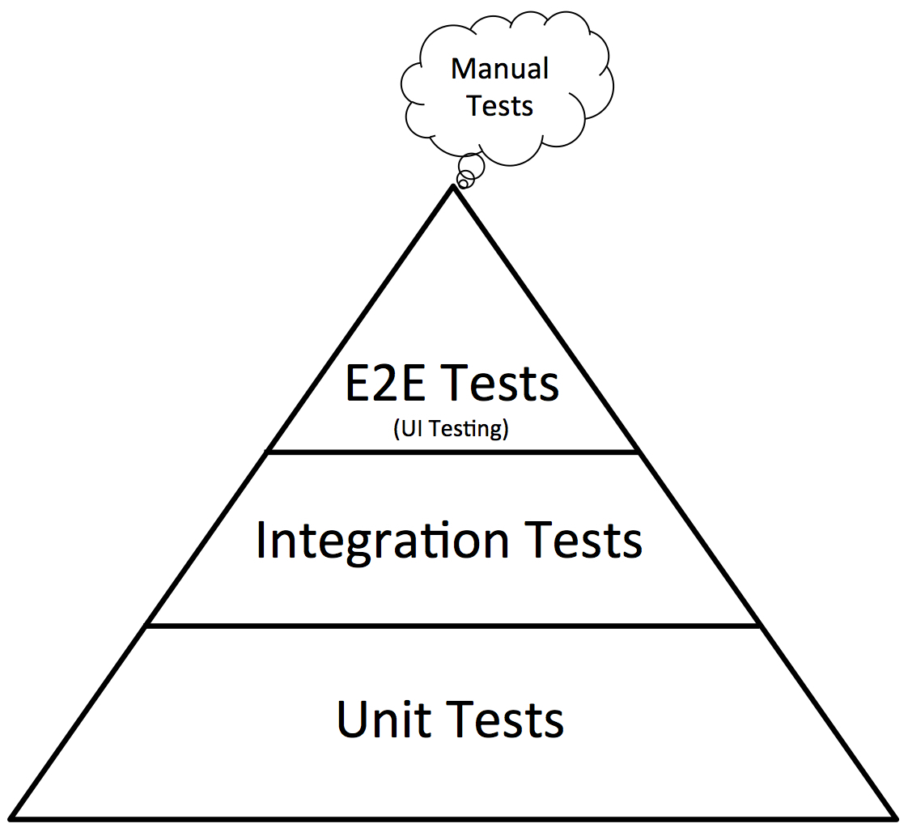
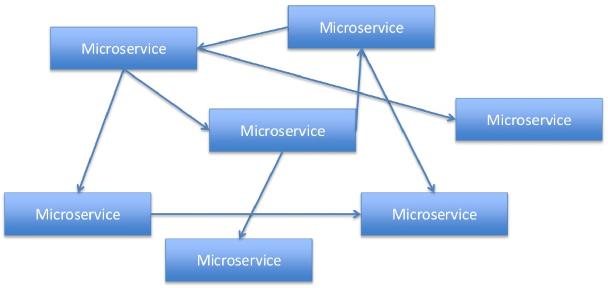
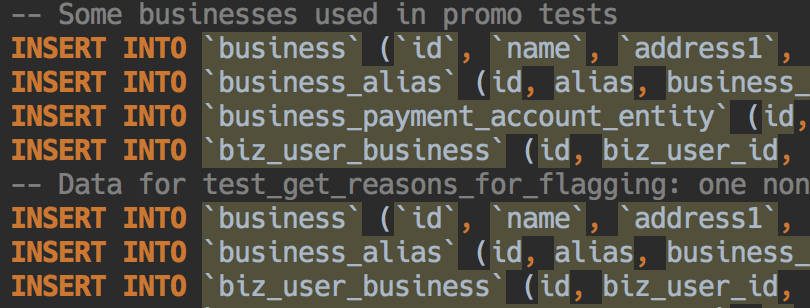
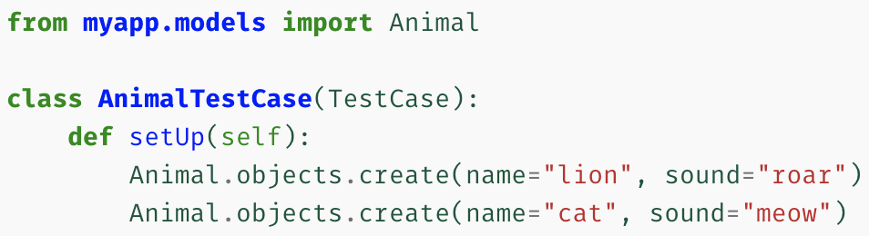
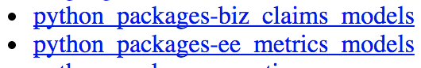
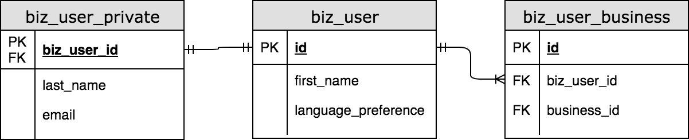
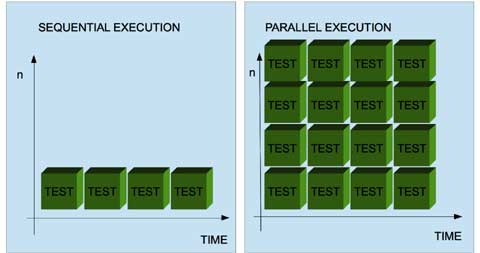
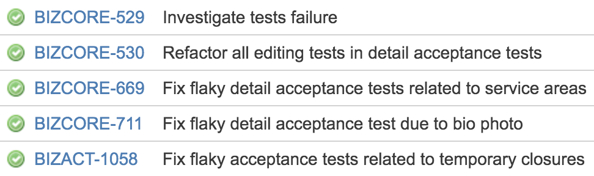

Faster end-to-end tests with fixture factories
Stephan Jaensch
@s_jaensch
Yelp's mission
To connect people to great local businesses
What I'll talk about
- What are end-to-end tests?
- The problem with setting up end-to-end tests
- How do fixture (or data) factories help solve the problem?
- How can we make tests faster?
End-to-end tests - the what and why
Source: https://www.ministryoftesting.com/wp-content/uploads/2014/10/typical_pyramid.jpg
Our service technology stack
What's hard about E2E tests?
Source: https://www.slideshare.net/danveloper/microservices-the-right-way
Creating E2E test state
Lots of SQL statements...
Taking inspiration from Django
...but for downstream services as well
...and without code duplication
Testing factory libraries
- Contain SQLAlchemy models as well as factory functions
- Factories provide a slightly higher level of abstraction
- Take care of common default values
- Make sure data is logically correct
Test - before
def test_get_answer_list_empty_list(testapp):
response = testapp.get(
'/business/{business_id}/question/'
'{question_id}/answer/v1'.format(
business_id=encrypt_id(3),
question_id=encrypt_id(2),
),
params={
'limit': LIMIT,
'offset': OFFSET,
},
)
assert response.json == {…}
Test - after
def test_get_answer_list_empty_list(testapp, question, business_id):
response = testapp.get(
'/business/{business_id}/question/'
'{question_id}/answer/v1'.format(
business_id=encrypt_id(business_id),
question_id=encrypt_id(question.id),
),
params={
'limit': LIMIT,
'offset': OFFSET,
},
)
assert response.json == {…}
The business fixture
@pytest.fixture
def business_id(db_session):
return business_factory.create(db_session)
def create(
session,
name='Levchins',
…
):
business = Business(
name=name,
…
)
session.add(business)
session.commit()
return business.id
Why not use models directly?
Why not use models directly?
def biz_user_create(session, business_id=None, email=None, …):
"""Creates a biz_user with password 'password'"""
biz_user = BizUser(
…
)
session.add(biz_user)
session.flush()
session.add(
BizUserPrivate(
biz_user_id=biz_user.id,
email=email,
)
)
if business_id:
add_biz_user_to_business(session, biz_user.id, business_id)
session.commit()
return biz_user.id
Downstream services with data creation APIs
@pytest.fixture
def question(question_answer_client, business_id, confirmed_user_id):
return question_answer_client.business.create_question(
body={
'text': 'Test question...?',
'platform_source': 'other',
'subscription': False,
},
business_id=business_id,
).result().question
Pros and Cons
- Natural fit for pytest fixtures
- Much easier data creation
- People create separate data entries for each test "automatically"
- Need to maintain data creation factories
- Potentially slower (not sharing data across tests)
How to make tests faster
Source: http://www.methodsandtools.com/tools/selendroid.html
Execute tests in parallel with pytest
$ pip install pytest-xdist
$ python -m pytest -s -vvv -n 4 tests/acceptance
Execute tests in parallel with pytest
Takeaways
- Use fixture factories for faster development and more correct test data
- Convert tests for test isolation and repeatability
- Take advantage of it by executing tests in parallel
Other talks by Yelpers
"Write more decorators (and fewer classes)"
by Antonio Verardi; Tuesday, 10:30, Anfiteatro 2
"Teeing up Python: Code Golf"
by Lee Sheng; Wednesday, 12:10, PyCharm Room
Questions?
sjaensch@yelp.com / @s_jaensch
https://github.com/sjaensch/faster_end_to_end_tests_talk.git